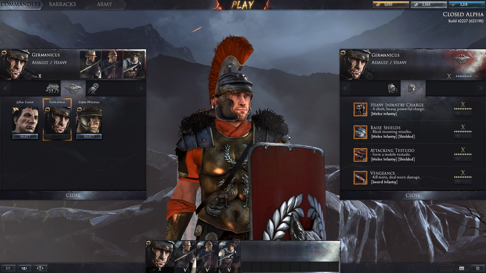

Total War: Arena Dev Talks Possible Console Edition And Avoiding Pay-To-Win
"Right now, we want Creative Assembly to focus on what they have--which is a PC game."

The next Total War game differentiates itself from those that came before it. Total War: Arena is a free-to-play, online-focused game in the works for PC, made by series studio Creative Assembly. It's still without a release date, but progress is moving along, and employees from Wargaming--whose Alliance label is working on the game--shared some new insight on the project in an interview with GameSpot today at the WGL APAC event in Taipei.
Wargaming producer Jose Edgardo Garcia talked about potentially bringing the game to consoles and how Wargaming is trying to avoid a pay-to-win scenario, among other topics. On the subject of console plans, he said the focus is on bringing the game out for PC first, though he strongly suggested that a console release could happen further down the road.
"Right now, we want Creative Assembly to focus on what they have--which is a PC game," Garcia said. "Now, the thing is, Total War: Arena will be under the Wargaming universe in our portfolio. That means they will follow the rules that our other games have."
Wargaming's biggest hit, World of Tanks, launched first on PC and came to consoles later--it's available on Xbox One, PlayStation 4, and Xbox 360. It sounds like the same thing could happen for Total War: Arena. One thing is for sure, though--Wargaming is not going to push Creative Assembly into something before it's ready.
"We don't want to pressure them to rush into anything," Garcia said. "We want them to concentrate on making a high-quality game and that's where we are at right now."
Moving on to Total War: Arena's business model, we asked about the stigma that is still attached to some free-to-play games for being "pay-to-win." Some games might be guilty of this, he said (without naming any names), though Total War: Arena hopes to not be one of them.
"Definitely going to say no," Garcia said about Total War: Arena being pay-to-win
"We know our audience; we definitely get their feedback," he added. "We make sure that the game is for their enjoyment, their entertainment. We want to make happy players, not pissed off players."
"We are very committed to keeping players happy."
Wargaming's head of marketing for APAC, Tatsiana Martsinouskaya, stressed that Arena remains in development (it's in alpha now), so the main goal currently is to refine and polish the gameplay. The decisions about monetization will come later, she told us.
Keep checking back with GameSpot for more from this interview and other topics in the coming days. For now, you can see some footage of the game in its alpha state in the video above.
Are you looking forward to Arena? Let us know in the comments below!
This story has been updated.
Writer : Berke KIRAN
HOME PC PS4 XBOX ONE TV/FILM REVIEWS Sign In